1.1 Median 0.71, range 0.10 to 1.24, first quartile 0.535, third quartile 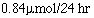
2.2 Mean = 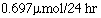 , SD = 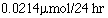 , range .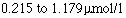
2.3 Points 0.10 and 1.24. 2/40 or 5%.
3 .2 A uniform or flat distribution. Population mean 4.5, population SD 2.87.
3.3 The distribution will be approximately Normal, mean 4.5 and SD 287/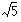 = 1.28.
4.1 The reference range is 12.26 - 57.74, and so the observed value of 52 is included in it.
5.1 0.42 g/dl, z = 3.08 0.001<P<0.01, difference = 1.3 g/dl, 95% CI 0.48 to 2.12 g/dl.
6.1 SE (percentage) = 2.1%, SE (difference) = 3.7%, difference = 3.4%. 95% CI -3.9 to 10.7%, z = 0.94, P = 0.35.
6.2 Yes, the traditional remedy, z = 2.2, P = 0.028.
7.2 t = 2.652, d.f. = 17, 001<P<0.02.
7.3 0.56g/dl, t = 1.243, d.f.=20, 0.1<P<05, 95% CI -0.38 to 1.50g/dl.
7.4 15 days, t = 1.758, d.f. = 9, 0.1<P<05, 95% CI -4.30 to 34.30 days.
8.1 Standard 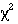 = 23.295, d.f. = 4, P>0.5. Trend = 2.25, d.f. = 1, P = 0.13.
8.2 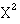 = 3.916, d.f. = 1, 0.02<P<0.05, difference in rates 9%, 95% CI 0.3 to 17.9%.
8.3 = 0.931, d.f. = 1, 0.1<P<0.5, difference in rates 15%, 95% CI -7.7 to 38%.
8.4 = 8.949, d.f. = 3, 0.02<P<0.05. Yes, practice C; if this is omitted the remaining practices give = 0.241, d.f. = 2, P>0.5. (Both tests by quick method.)
9.1 Sickness rate in first department 28%, in second department 8%, difference 20% (approximate 95% CI = -6 to 45%, P = 0.24 (Fisher's Exact test mid P)). P is calculated from 2 x (0.5 x 0.173 + 0.031).
10.2 Mann-Whitney statistic = 74. The group on the new remedy. No.
11.3 y = 36.1 - 2.34x. This means that, on average, for every 1 mile increase in mean distance the attendance rate drops by 2.34%. This can be safely accepted only within the area measured here.
11.4 SE = 0.39, 95% CI = -2.34 - 2.145 x 0.39 to -2.34 + 2.145 x 0.39 = -3.1 to -1.5%.
12.1 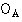 = 6, 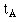 = 8.06, 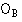 = 8, 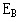 = 5.94. Log rank = 1.24, d.f. = 1, 0.1<P<0.5.
12.2 Risk = 0.55, 95% CI 0.19 to 1.60.
13.1 Matched case control study.